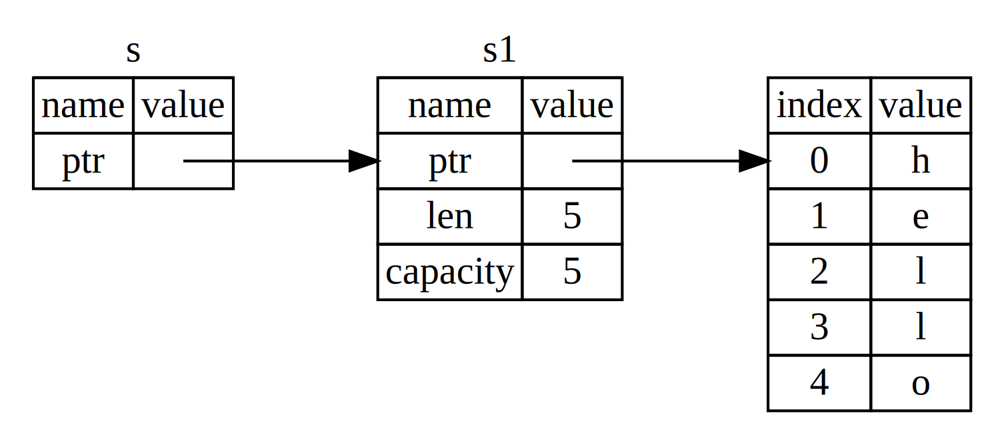
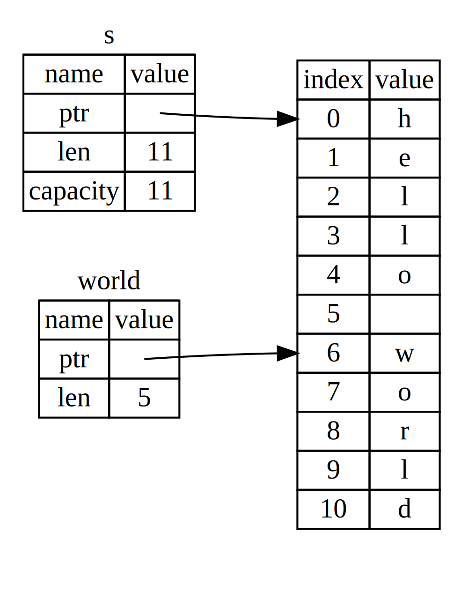

0x04 Ownership*
所有权系统是 Rust 最与众不同的特性，它让 Rust 无需垃圾回收（garbage collector）即可保障内存安全。
本章将讲到所有权以及相关功能：借用（borrowing）、切片（slice）以及 Rust 如何在内存中布局数据。
What is Ownership*
Rust 的核心特征是所有权（Ownership)。虽然这一特性很容易解释，但它对语言的其他部分有深刻影响。
所有运行的程序都必须管理其使用计算机内存的方式。一些语言中具有垃圾回收机制，在程序运行时不断地寻找不再使用的内存；而另一些语言中，程序员必须亲自分配和释放内存。Rust 则选择第三种方式：通过所有权系统管理内存，编译器在编译时会根据一系列的规则进行检查。在运行时，所有权系统的任何功能都不会减慢程序。
本章将通过完成一些示例来学习所有权，这些示例基于一个常用的数据结构：字符串。
很多语言不需要考虑堆和栈，但在 Rust 中，数据在栈上还是堆上很大程度上影响语言的行为以及抉择。
跟踪哪部分代码正在使用堆上的哪些数据，最大限度的减少堆上的重复数据的数量，以及清理堆上不再使用的数据确保不会耗费空间，这些问题正式 Rust 的所有权系统要处理的。所有权的存在就是为了管理堆数据。
所有权规则*
首先看一下所有权的规则。
- Rust 中的每一个值都有一个被称为所有者的变量。
- 值在任一时刻有且只有一个所有者。
- 当所有者（变量）离开作用域，值将被丢弃。
变量作用域*
作用域是一个项在程序中的范围。变量从声明的点知道当前作用域结束时都是有效的。
目前为止，变量是否有效与作用域的关系跟其他编程语言是类似的。
在此基础上介绍 String 类型。
String 类型*
为了演示所有权规则，需要一个比第三章中所讲的都要复杂的数据类型。前面介绍的类型都是存储在栈上的并且当离开作用域时被移出栈，现在我们需要存储在堆上的数据来探索 Rust 是如何知道该在何时清理数据的。
这里使用 String 为例，并专注于 String 与所有权相关的部分。这些方面也同样适用于标准库提供的或自定义的其他复杂数据类型。第八章会深入讲解 String。
字符串字面值，即被硬编码进程序里的字符串值。但它们是不可变的，且要求在编码时已知，这就有了 String 类型。String 类型会被分配到堆上，以存储编译时未知大小的文本。可以使用 from 函数基于字符串字面值创建 String。
1 | let s = String::from("hello"); |
:: 是运算符，允许将特定的 from 函数置于 String 类型的命名空间（namespace）下，第五章会讲解这个语法，在第七章会讲到模块的命名空间。
String 类型可以修改。
1 2 3 4 5 | let mut s = String::from("hello"); s.push_str(", world!"); // push_str() 在字符串后追加字面值 println!("{}", s); // 将打印 `hello, world!` |
String 可变而字面值不可以，区别在于两个类型的内存处理上。
内存与分配*
String 的存在就是为了支持一个可变的文本片段，需要在堆上分配一块编译时未知大小的内存来存放内容。这就意味着：
- 必须在运行时向操作系统请求内存。
- 需要一个处理完
String时将内存返回给操作系统的方法。
第一部分，在调用 String::from 时，就会请求所需的内存。这跟很多编程语言类似。
而第二部分，在有垃圾回收（garbage collector, GC）语言中，GC 记录并清除不再使用的内存。没有 GC 的话，就需要用代码显式释放，需要精确地为一个 alloc 配对一个 free。
而 Rust 采用一个不同的策略：内存在拥有它的变量离开作用域后就被自动释放。当变量离开作用域时，Rust 会自动调用一个特殊的函数 drop。（类似 C++ 的 RAII 思想）。
这种模式看起来很简单，但是在复杂场景下代码的行为可能是不可预测的，如有多个变量使用在堆上分配的内存时。下面来探索一些这样的场景
变量与数据的交互方式：移动（Move）*
Rust 中的多个变量可以采用一种独特的方式与同一数据交互。
1 2 3 4 | let x = 5; let y = x; println!("{}, {}", x, y); // 5, 5 |
对于整数值，先把 5 绑定到 x，然后生成一个 x 的拷贝绑定到 y，这两个 5 都放入了栈中。
而对于 String 类型，数据是在堆上的。
1 2 3 | let s1 = String::from("hello"); let s2 = s1; println!("{}, {}", s1, s2); |
编译会报错。
1 2 3 4 5 6 7 8 9 | error[E0382]: borrow of moved value: `s1` --> src/main.rs:6:24 | 4 | let s1 = String::from("hello"); | -- move occurs because `s1` has type `String`, which does not implement the `Copy` trait 5 | let s2 = s1; | -- value moved here 6 | println!("{}, {}", s1, s2); | ^^ value borrowed here after move |
这里就需要先了解 String 的底层实现，下图展示了将 "hello" 绑定给 s1 在内存中的表现形式。

一个 String 实例由三部分组成：一个指向存放字符串内容内存的指针、长度和容量。这组数据存在栈上，而字符串内容存放在堆上。长度表示 String 内容当前使用的内存数，而容量是 String 从操作系统总共获取的内存数，二者有区别，但在这里不重要。
当把 s1 赋值给 s2 时，String 的数据被复制，即从栈上复制其指针、长度和容量，而没有复制指针指向的堆上数据。内存中数据的表现如下图所示。

如果 Rust 也复制堆上的数据，那么在操作较多数据时可能对性能造成非常的影响。
前面提到，变量离开作用域后，Rust 会自动调用 drop 函数清理变量的堆内存。但在这种情境下，如果 s1 和 s2 离开作用域，会尝试释放相同的内存，形成 double free 的错误。
为了在这种场景下确保内存安全，Rust 的处理是这样的：Rust 直接认为 s1 不再有效，而不是拷贝堆上内存。这样，Rust 在 s1 离开作用域后就不需要清理任何东西。所以在 s2 被创建后尝试使用 s1，就会报错。
这看起来似乎是浅拷贝，但 Rust 同时使第一个变量失效，这个操作被称为移动（move）。这里还隐含了一个设计选择，Rust 永远不会自动创建数据的“深拷贝”。因此任何自动的复制都可以被认为对运行时性能影响较小。
变量与数据的交互方式：克隆*
如果确实需要“深拷贝”复制 String 堆上的数据，可以使用 clone 通用函数。第五章会讨论方法语法，这在很多语言中是一个常见功能。
1 2 3 4 | let s1 = String::from("hello"); let s2 = s1.clone; println!("{}, {}", s1, s2); // hello, hello |
只在栈上的数据：拷贝*
前面举的第一个例子，对于整型数据 5，没用调用 clone，x 依然有效且没有被移动到 y 中。
这是因为像整型这种编译时已知大小的类型被存储在栈上，拷贝实际值很快。
Rust 有一个 叫做 Copy trait 的特殊注解，可以用于像整型这样存储在栈上的类型上（第十章会详细讲解 trait）。如果一个属性实现了 Copy trait，那么在其值赋值给其他变量后仍然可用。Rust 不允许自身或其任何部分实现了 Drop trait 的类型使用 Copy trait。如果对离开作用域时需要特殊处理的类型使用 Copy 注解，会出现编译错误。
通常来说，任何简单标量值的组合可以实现 Copy，不需要分配内存或某种形式资源的类型可以实现 Copy。包括所有整型、布尔类型、浮点类型、字符类型以及包含的类型实现了 Copy 的元组。
所有权与函数*
将值传递给函数在语义上与给变量赋值相似，向函数传值可能是复制或移动。下面是一个变量进入和离开作用域的例子。
1 2 3 4 5 6 7 8 9 10 11 12 13 14 15 16 17 18 19 20 21 | fn main() { let s = String::from("hello"); // s 进入作用域 takes_ownership(s); // s 的值移动到函数里 ... // ... 所以到这里不再有效 let x = 5; // x 进入作用域 makes_copy(x); // x 应该移动函数里， // 但 i32 是 Copy 的，所以在后面可继续使用 x } // 这里, x 先移出了作用域，然后是 s。但因为 s 的值已被移走， // 所以不会有特殊操作 fn takes_ownership(some_string: String) { // some_string 进入作用域 println!("{}", some_string); } // 这里，some_string 移出作用域并调用 `drop` 方法。占用的内存被释放 fn makes_copy(some_integer: i32) { // some_integer 进入作用域 println!("{}", some_integer); } // 这里，some_integer 移出作用域。不会有特殊操作 |
在调用 take_ownership 之后使用 s 时，就会编译报错。
返回值与作用域*
返回值也可以转移所有权。
1 2 3 4 5 6 7 8 9 10 11 12 13 14 15 16 17 18 19 20 21 22 23 24 25 | fn main() { let s1 = gives_ownership(); // gives_ownership 将返回值 // 移给 s1 let s2 = String::from("hello"); // s2 进入作用域 let s3 = takes_and_gives_back(s2); // s2 被移动到 // takes_and_gives_back 中, // 它也将返回值移给 s3 } // 这里, s3 移出作用域并被丢弃。s2 也移出作用域，但已被移走， // 所以什么也不会发生。s1 移出作用域并被丢弃 fn gives_ownership() -> String { // gives_ownership 将返回值移动给 // 调用它的函数 let some_string = String::from("hello"); // some_string 进入作用域. some_string // 返回 some_string 并移出给调用的函数 } // takes_and_gives_back 将传入字符串并返回该值 fn takes_and_gives_back(a_string: String) -> String { // a_string 进入作用域 a_string // 返回 a_string 并移出给调用的函数 } |
变量的所有权总遵循相同的模式：将值赋给另一个变量时移动它。当持有堆上数据的变量离开作用域时，其值将通过 drop 被清理掉，除非数据被移动到另一个变量所有。
如果想要一个函数使用一个值而不获取其所有权，那么传进去再返回就很麻烦。当然，我们可以使用元组把所有想返回的值打包。但这种场景很常见，这么写太麻烦，所以需要用到 Rust 的引用（reference）。
References and Borrowing*
将对象的引用作为参数传入可以不转移值的所有权。
1 2 3 4 5 6 7 8 9 10 11 | fn main() { let s1 = String::from("hello"); let len = calculate_length(&s1); println!("The length of '{}' is {}.", s1, len); } fn calculate_length(s: &String) -> usize { s.len() } |
传入 &s1 给函数，同时在函数定义中的形参是 &String。 & 符号就是引用，允许使用值但不获取所有权。下图展示了 &String s 指向 String s1 的内存示意图。

s 是指向值 s1 的引用，而不拥有它。当引用离开作用域时其指向的值不会被清理。
函数签名中使用 & 表明参数 s 是一个引用，变量 s 有效的作用域与函数参数一样，但离开作用域后不丢弃它指向的数据，因为没有所有权。
将获取引用作为函数参数的方式称为借用（borrowing）。但是有一个问题，如果要修改借用的变量，就会报错。前面也提到过，类似变量默认不可变，默认不允许修改引用的值。
可变引用*
要想修改引用的值，首先必须把被引用的变量设置为可变，同时必须创建一个可变引用，而且函数签名中也要接受一个可变引用。
1 2 3 4 5 6 7 8 9 | fn main() { let mut s = String::from("hello"); change(&mut s); } fn change(some_string: &mut String) { some_string.push_str(", world"); } |
要添加 3 处 mut，变量、引用和形参。
但可变引用有一个限制：特定作用域中的特定数据只能有一个可变引用。这样的好处是在编译时就可以避免数据竞争（data race），数据竞争类似于条件竞争，可能的成因有：两个或更多指针同时访问同一数据、至少有一个指针被用来写入数据而且没有同步数据访问的机制。
可以使用大括号创建一个新作用域，以允许拥有多个可变引用，只是不能同时拥有。类似的规则也存在于同时使用可变与不可变引用中，不能在拥有不可变引用的同时拥有可变引用，否则不可变引用的数据就可能被改变。
要注意的是，引用的作用域是从声明的地方开始到最后一次使用位置，也就是说，下面的代码是可以编译的。
1 2 3 4 5 6 7 8 9 10 11 12 13 14 15 16 17 18 | let mut s = String::from("hello"); { let r1 = &s; // 没问题 let r2 = &s; // 没问题 println!("{} and {}", r1, r2); // 此位置之后 r1 和 r2 不再使用 let r3 = &mut s; // 没问题 println!("{}", r3); } { let r1 = &mut s; // 没问题 println!("{} r1", r1); // 此位置之后 r1 不再使用 let r3 = &mut s; // 没问题 println!("{} r3", r3); } |
只要可变引用与其他引用作用域之间没有交叉，就没有潜在风险，也就不会编译报错。
悬垂引用（Dangling References）*
在有指针的语言中，很容易通过释放内存时保留指向它的指针而错误地生成一个悬垂指针（dangling pointer），悬垂指针所指向的内存可能已经被分配给其他持有者。Rust 编译器确保引用永远不会变成悬垂状态：当拥有一些数据的引用，编译器确保数据不会在其引用之前离开作用域。
1 2 3 4 5 6 7 | fn dangle() -> &String { // dangle 返回一个字符串的引用 let s = String::from("hello"); // s 是一个新字符串 &s // 返回字符串 s 的引用 } // 这里 s 离开作用域并被丢弃。其内存被释放。 // 危险！ |
s 在 dangle 函数内创建，执行完毕后，s 将被释放。这里尝试返回它的引用，这意味着引用会指向一个被释放的 String，就会编译报错。
1 2 3 4 5 6 7 8 | error[E0106]: missing lifetime specifier --> src/main.rs:5:16 | 5 | fn dangle() -> &String { | ^ expected named lifetime parameter | = help: this function's return type contains a borrowed value, but there is no value for it to be borrowed from help: consider using the `'static` lifetime |
这里涉及到生命周期的概念，第十章会详细介绍。
这里的解决方法就是直接返回 String。
引用的规则*
- 在任意给定时间，可变引用不与其他引用（可变或不可变）共存。
- 引用必须总是有效的。
Slices*
另一个没有所有权的数据类型是 slice。slice 允许引用集合中一段连续的元素序列，而不需要引用整个集合。
编写一个函数，接收一个字符串，并返回在该字符串中找到的第一个单词，假设以空格分隔单词。
首先考虑函数签名，不需要所有权，传入引用即可，那么要返回什么呢？这里可以返回单词结尾的索引。现在还不熟悉 String 的 API，直接看给出的示例代码。
1 2 3 4 5 6 7 8 9 10 11 | fn first_word(s: &String) -> usize { let bytes = s.as_bytes(); for (i, &item) in bytes.iter().enumerate() { if item == b' ' { return i; } } s.len() } |
首先使用 as_bytes 方法将 String 转化为字节数组，然后使用 iter 方法迭代，eumerate 包装成 (idx, ref) 元组。然后就遍历字符串，返回找到的第一个单词结尾的索引。
但是返回的索引只在 &String 的上下文才有意义，如果原字符串修改，比如直接 s.clear() 清空，则索引也就无效，编译器也不会检查这种情况。
Rust 提供字符串 slice 来解决这个问题。
字符串 slice*
slice 是对字符串中一部分值的引用。
1 2 3 4 | let s = String::from("hello world"); let hello = &s[0..5]; let world = &s[6..11]; |
创建的部分引用示意图如下。

slice 包括一个指向其中第一个元素的指针和总长度。
字符串 slice 的索引必须在有效的 UTF-8 字符边界内，不能尝试从一个多字节字符的中间位置创建字符串。第八章会讨论 UTF-8 的处理问题。
下面用 slice 重写 first_word 函数。
1 2 3 4 5 6 7 8 9 10 11 12 13 14 15 16 17 18 19 | fn first_word(s: &String) -> &str { let bytes = s.as_bytes(); for (i, &item) in bytes.iter().enumerate() { if item == b' ' { return &s[..i]; } } &s[..] } fn main() { let mut s = String::from("hello world"); let word = first_word(&mut s); s.clear(); println!("word = {}", word); } |
字符串 slice 的类型声明写作 &str，根据索引返回 slice。
如果现在在调用 first_word 后尝试改字符串，不管是清空还是在后面附加，会编译报错。
1 2 3 4 5 6 7 8 9 10 11 | error[E0502]: cannot borrow `s` as mutable because it is also borrowed as immutable --> src/main.rs:17:5 | 15 | let word = first_word(&s); | -- immutable borrow occurs here 16 | 17 | s.clear(); | ^^^^^^^^^ mutable borrow occurs here ... 20 | println!("word = {}", word); | ---- immutable borrow later used here |
这里的问题就是 clear 会尝试获取一个可变引用，这就与现有的引用冲突，导致编译失败。所以这里如果在 word 不再被使用之后修改，则不会报错。
字符串字面值就是 slice*
写程序时通过报错可以发现，字符串字面值的类型也是 &str，所以说字符串字面值就是一个指向程序中特定位置的 slice，而字面值不可变就因为它是一个不可变引用。
了解了 slice 之后可以把 first_word 的参数从 String 改成 &str，使 API 更加通用。
其他类型的 slice*
对于数组也可以使用 slice 方式。
1 2 | let a = [1, 2, 3, 4, 5]; let slice = &a[1..3]; |
这里的 slice 类型是 &[i32]，与字符串 slice 的工作方式相同。第八章讲到 vector 时会详细讨论这些集合。
总结*
所有权、借用和 slice 这些概念让 Rust 程序在编译时确保内存安全。Rust 保证数据所有者离开作用域时自动清除其数据。
所有权系统影响了 Rust 很多其他部分的工作方式，这贯穿本书的余下内容。第五章将介绍如何将多个数据组合进一个 struct。